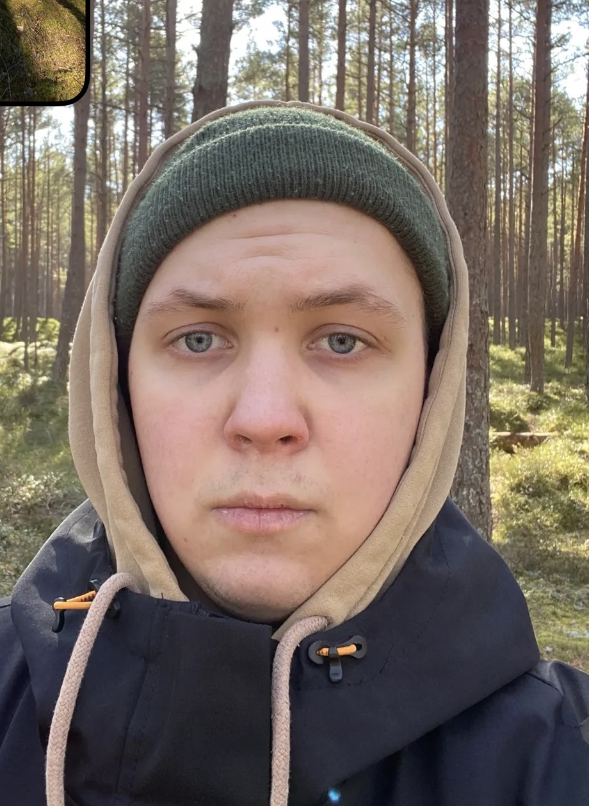

<!DOCTYPE html>
<html lan="en"></html>
<head>
    <meta charset="UTF-8">
    <title>My Resume</title>
</head>

<body>
    <h1>Emils's resume</h1>
    
    <br/>
    <a href="./assets/contact.html">Contact Me</a>
    <hr/>

    <h2>Summary:</h2>
        <p>A hard workling student with experience in I.T. support.</p>
        <br/>

        <h2>Education:</h2>
        <ul>
            <li>Riga Technical University, Faculty of Computer Systems,
                <br/>
                Academic Bachelor's Degree in Computer Systems 
                <br/>
                2022-2023
            </li>
            <br/>
            <li>Āgenskalna State Gymnasium 
                <br/>
                Secondary Education
                <br/>
                2018-2021
            </li>
        </ul>
        <br/>

    <h2>Work experience:</h2>
        <ul>
            <li>SIA "Esplanāde" Marketing and Communication Agency
                <hr/>
                Position: Assistant (02.2019-03.2019)
                <hr/>
                Main responsibilities: Checking the company's visibility on the "Google" search engine and comparing the company's information with the search results. Correcting the information on "Google" if necessary. Adding the company's location to the "Waze" application.
            </li>
            <br/>

            <li>SIA "Mežmaļi+" Wooden window and door manufacturing.
                <hr/>
                Position: Assistant Worker (06.2017-07.2017)
                <hr/>
                Main responsibilities: Preparing the product before painting to prevent incorrect areas from being painted. Sanding the product. Transferring the products.
            </li>
            <br/>

            <li>Riga English Gymnasium 
                <hr/>
                Position: Assistant to the APP teacher/lab assistant in computer science/network administrator (10.02.2022-present)
                <hr/>
                Main responsibilities: Solving technical problems. Assisting in providing equipment for various events.Updating, installing and keeping track of operating systems.
            </li>
            <br/>

            <li>SIA "DIJA" 
                <hr/>
                Main responsibilities: Creating educational materials for IT courses. Conducting training courses for unemployed individuals.
            </li>
            <br/>
        </ul>
    
    <h2>Skills:</h2>
        <ul>
            <li>Language skills:</li>
                <ul>
                    <li>Latvian</li>
                        <ul>
                            <li>Speaking: Native</li>
                            <li>Writing: Native</li>
                            <li>Understanding: Native</li>
                        </ul>
                    <li>English</li>
                        <ul>
                            <li>Speaking: C1</li>
                            <li>Writing: C1</li>
                            <li>Understanding: C1</li>
                        </ul>
                </ul>
            <br/>
            <li>Automation in Excell</li>
            <br/>
            <li>Fixing/replacing computer hardware</li>
        </ul>
        <br/>

    <h2>Cetifications:</h2>
        <ul>
            <li>Certificate in Child Rights Protection </li>
            <br/>
            <li>C++ programming Course Certificate </li>
            <br/>
            <li>Category B Driver's License</li>
        </ul>
        <footer>This website was made by Emīls Ozoliņš</footer>
</body>